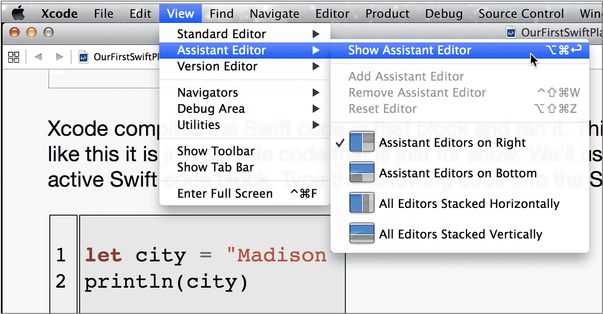
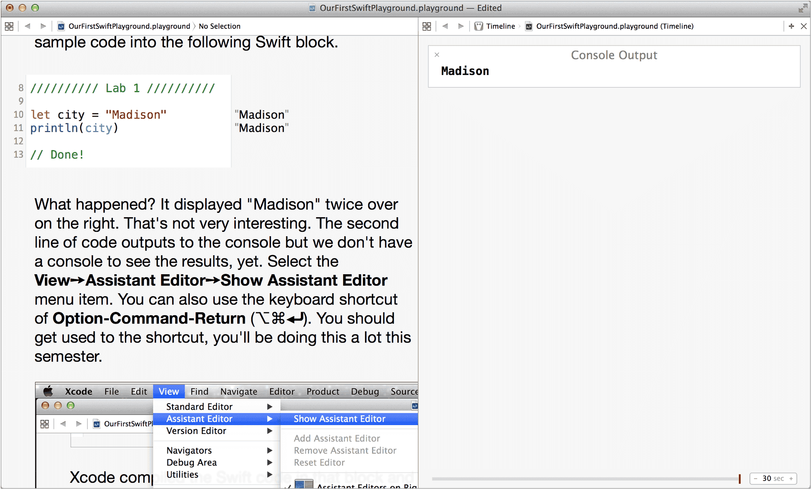
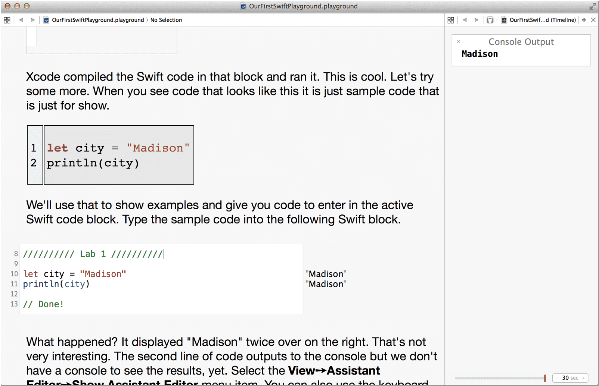

What happened? It displayed "Madison" twice over on the right. That's not very interesting. The second line of code outputs to the console but we don't have a console to see the results, yet. Select the View➙Assistant Editor➙Show Assistant Editor menu item. You can also use the keyboard shortcut of Option-Command-Return (⌥⌘⏎). You should get used to the shortcut, you'll be doing this a lot this semester.

The console will open up in a pane on the right, but it will be too big and will interfere with the text and images.

Grab the line in between the panels and drag it to the right to some reasonable size based on your screen. There, that's better.

That's it for your first Swift playground. We'll be using a lot of them this semester. In the playground you got to see what playgrounds are and how to use them. We'll learn more about them and what you can do with them soon.